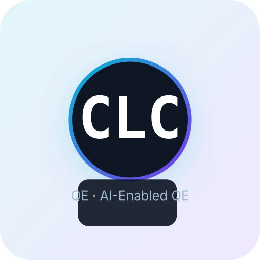

Featured
Adobe Digital Assets & Web Content
Contributed to regression coverage, defect triage, and cross-team testing on a large-scale Adobe Experience Manager (AEM) platform serving enterprise stakeholders.
AEMAzure DevOpsRegression
Hello there, I am
Quality Engineering Associate at Accenture with 2+ years of hands-on experience in manual testing, regression testing, test automation, and defect management across enterprise-scale Agile projects. Passionate about AI-Enabled QA, automation frameworks, and continuous learning.

I'm a results-driven Quality Engineering Associate based in Cebu City, Philippines, with proven expertise in Selenium WebDriver (Java), Cypress (JavaScript), and Playwright for end-to-end web application testing.
I'm adept at leveraging Azure DevOps for defect lifecycle management and collaborating cross-functionally with developers, business analysts, and stakeholders to deliver high-quality releases.
I have a strong foundation in Computer Engineering and I'm Microsoft Azure (AZ-900), Power Platform (PL-900), and Tricentis Tosca certified. Outside of regression cycles, you'll find me exploring how Generative AI can supercharge QA workflows.
A few things I bring to the table:
2024 – Present · Cebu City, Philippines
2023 – 2024 · Philippines
2019 – 2023
Contributed to regression coverage, defect triage, and cross-team testing on a large-scale Adobe Experience Manager (AEM) platform serving enterprise stakeholders.
Built and maintained Selenium (Java) automation projects with Maven and TestNG; expanded into Cypress and Playwright frameworks for modern web automation.
Supported partner teams (e.g., Trados manual performance testing) and contributed to KT/Scrum onboarding for new team members.
Early adopter of generative AI tools (GitHub Copilot, M365 Copilot) for accelerating test design, automation scripting, and defect reporting.
Performed high-quality data annotation and validation to support AI/ML visual recognition model training, ensuring accuracy, consistency, and adherence to labeling standards while collaborating with cross-functional AI/ML and QA teams to refine annotation guidelines and improve dataset quality.
Cloud concepts, core Azure services, security, governance and pricing.
Microsoft · 2025Power Apps, Power Automate, Power BI and Power Virtual Agents.
Microsoft · 2025Model-based, no-code automation for web application testing.
Tricentis · 2024What's next?
Whether you have a QA role to fill, an automation framework to scale, or just want to chat about AI-enabled testing — my inbox is always open. I'll get back to you as soon as I can.